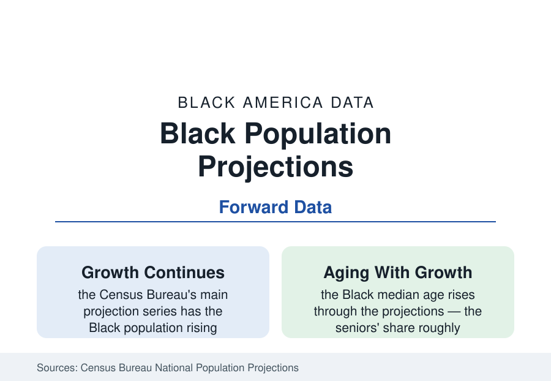

Black Census
Black America's Future in the Projections: Growth to Mid-Century
The Census Bureau projects the Black population to keep growing through 2060, aging as it grows, on immigration and the youngest cohorts. The official projections data.

The Census Bureau's national projections — the demographers' official future — give Black America a distinctive trajectory: continued growth through 2060 (past 55 million in the alone-or-in-combination series of the current vintage), a slowly rising share of the national population, and an age structure transforming underneath the growth as the median age climbs. The projections are not prophecy; they are the present's rates, extended — which makes them the cleanest statement of what the current data imply. This article reports the forward file.
The Growth Arithmetic: Births, Deaths, and Arrivals
The components table tells the growth story in three lines. Natural increase (births minus deaths) remains positive for the Black population but narrows steadily in the projections — fertility at and below replacement (the family file's current rates) against a rising death count as the large cohorts age — contributing a shrinking surplus each decade. Net international migration does the opposite: the immigration files' flows, projected forward, supply a growing share of the growth — in the main series, immigration becomes the majority source of Black population growth by the projection's later decades, a structural shift the demographers flag as the series' headline. The result: growth that slows in percentage terms while continuing in count — the Black population adding millions per decade at declining rates, its share of the U.S. total inching upward (the projections hold it roughly stable to modestly rising, as the nation's other groups' trajectories differ) — a future of more Black Americans, arriving increasingly from abroad and born increasingly to immigrant parents.
The Aging Transformation
The projections' most consequential table is the age pyramid's slow rotation. The Black median age (about 34 today) rises through the series toward the national figure as fertility's decline works through the cohorts and longevity — assumed to keep improving in the mortality models — extends the top. The seniors' share roughly doubles by mid-century in the projections (the 65-plus Black population growing from about one in ten to about one in five), and the 85-plus file multiplies fastest of all — the retirement, caregiving, and dementia files of this reference are the present tense of a much larger future, and the projections are their planning documents. The child population, by contrast, stays roughly level in count (its share of the total falling) — the schools files' enrollment futures are written here: stable-to-declining Black child cohorts nationally, growing in the suburban and immigrant metros, shrinking across the rural South — the geography of the state and city files extended forward.
The Composition Shifts the Projections Imply
Extended rates imply composition: the foreign-born share of the Black population (about one in ten today) rises through the series toward one in six or beyond by the later decades in the Pew-style extensions, with the second generation compounding beneath it — by mid-century, a third or more of Black Americans would be immigrants or their children, against a fifth today. The multiracial identification trend (the census's fastest-growing response pattern, concentrated in the young cohorts) projects a Black alone-or-in-combination count growing faster than the alone count — the categories' future divergence is itself a projection finding, and the Bureau's race-question redesigns will shape the measured series as much as the births will. Regionally, the estimates' current currents extend: the South's share of the Black population (57 percent and rising) edges higher, the suburban share rises within every metro, and the Black Belt's rural counties continue their long decline in the county projections — the map of 2060 is today's map, more so.
What Moves the Numbers: The Assumptions' Honesty
The projections carry their assumptions on their face, and the file's integrity is in naming them: fertility assumed to stabilize near current low levels (a faster fall or a recovery swings the child counts), immigration assumed at policy-dependent levels the recent record makes volatile (the series' alternative scenarios — high and low immigration — spread the 2060 Black population by millions, the widest uncertainty band in the file), mortality improvements assumed steady (the opioid and pandemic years demonstrated the assumption's fragility), and the classification continuity assumed across censuses that keep redesigning the question. The pandemic-vintage projections already revised the near term down on the mortality data. The demographers' discipline is the reader's: the projections are a baseline for thinking, not a destiny — the policies and choices of the reference's other six tabs are precisely the variables that will falsify them, in one direction or the other.
Reading the Future's Data
The official future says Black America grows, ages, suburbanizes, and internationalizes — 55 million and more by 2060, a fifth of them elders, a third of them the diaspora's first and second generations, still majority-Southern, still younger than the country it increasingly staffs and sustains. Every other number in this reference is a snapshot; the projections are the film's next reel, already exposed by the present's rates. What changes the reel is the work.
More in Black Census
The Black Population of the United States: Size, Definitions, and Distribution
The Black population of the United States totals 52.8 million — 15.4 percent of the nation. How the Census Bureau defines and counts the population, and where it lives.
Black Median Household Income in the United States
Black median household income stands at $56,490 in the Census Bureau's annual income report — how the figure is measured, how it compares, and what drives it.
The Black Poverty Rate: Levels, Children, and the Long Trend
The official Black poverty rate is 17.1 percent — against 11.1 percent nationally and 7.7 percent for non-Hispanic White Americans. How poverty is measured and what the data show.
Source: U.S. Census Bureau, National Population Projections; Census Bureau population estimates and components of change; Pew Research Center demographic research.